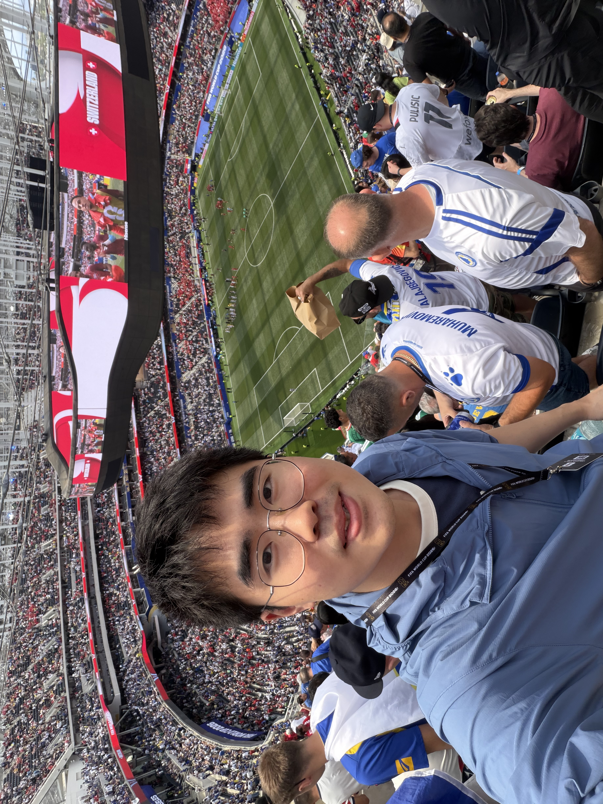

Life
Outside of research, I enjoy playing guitar and soccer.
Guitar & Music
My favorite singers are Cheer Chen (陈绮贞) and A-Yue (张震岳). I sometimes share videos of singing and playing guitar on Xiaohongshu.
Soccer
I enjoy playing soccer and support Real Madrid and Arsenal.
Moments
